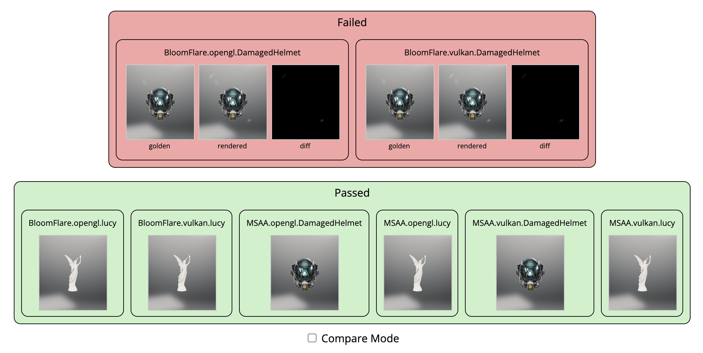

Rendering Difference Test
We created a few scripts to run gltf_viewer and produce headless renderings.
This is mainly useful for continuous integration where GPUs are generally not available on cloud machines. To perform software rasterization, these scripts are centered around Mesa's software rasterizers, but nothing bars us from using another rasterizer like SwiftShader. Additionally, we should be able to use GPUs where available (though this is more of a future work).
The script render.py contains the core logic for taking input parameters (such as the test
description file) and then running gltf_viewer to produce the renderings.
In the test directory is a list of test descriptions that are specified in json. Please see
sample.json to parse the structure.
Setting up python
The renderdiff project uses python extensively. To install the dependencies for producing
renderings, do the following step
- Set up a virtual environment (from the root directory)
python3 -m venv venv . ./venv/bin/activate - Install the rendering dependencies
pip install -r test/renderdiff/src/rendering_requirements.txt - Install the viewer depdencies
pip install -r test/renderdiff/src/viewer_requirements.txt - For the commands in the following section, do not exit the virtual environment. Once you've
completed all your work, you can exit with
deactivate
Running the test locally
-
To run the same presbumit as
test-renderdiff, you can dobash test/renderdiff/local_test.sh -
This script will generate the renderings based on the current state of your repo. Additionally, it will also compare the generated images with corresponding images in the golden repo.
-
To just render without running the test, you could use the following script
bash test/renderdiff/generate.sh
Update the golden images
The golden images are stored in a github repository: https://github.com/google/filament-assets.
Filament team members should have access to write to the repository. A typical flow for updating
the goldens is to upload your changed images into branch of filament-assets. This branch is
paired with a PR or commit on the filament repo.
As an example, imagine I am working on a PR, and I've uploaded my change, which is in a branch
called my-pr-branch, to filament. This PR requires updating the golden. We would do it
in the following fashion
Using a script to update the golden repo
-
Run interactive mode in the
update_golden.pyscript.python3 test/renderdiff/src/update_golden.py -
This will guide you through a series of steps to push the changes to a remote branch on
filament-assets.
Manually updating the golden repo
-
Check out the golden repo
git clone git@github.com:google/filament-assets.git -
Create a branch on the golden repo
cd filament-assets git switch -c my-pr-branch-golden -
Copy the new images to their appropriate place in
filament-assets -
Push the
filament-assetsworking branch to remotegit push origin my-pr-branch-golden -
In the commit message of your working branch on
filament, add the following lineRDIFF_BBRANCH=my-pr-branch-golden
Doing the above has multiple effects:
- The presubmit test
test-renderdiffwill test against the provided branch of the golden repo (i.e.my-pr-branch-golden). - If the PR is merged, then there is another workflow that will merge
my-pr-branch-goldento themainbranch of the golden repo.
Viewing test results
We provide a viewer for looking at the result of a test run. The viewer is a webapp that can be used by pointing your browser to a localhost port. If you input the viewer with a PR or a directory, it will parse the test result and show the results and the rendered and/or golden images.

To run the viewer of a test output directory that has been generated locally, you would run the following
python3 test/renderdiff/src/viewer.py --diff=[test output]
where [test output] is a directory containing the compare_results.json of the test run.
For example, it could be out/renderdiff/diffs/presubmit for the standard path to the
presubmit test output.
To see the results of a Pull Request initiated test run, you would do the following
python3 test/renderdiff/src/viewer.py --pr_number=[PR #] --github_token=[github token]
where [PR #] is the numeric ID of your pull request, and the [github token] is an acess token
that you (as a github user) needs to generate (reference).